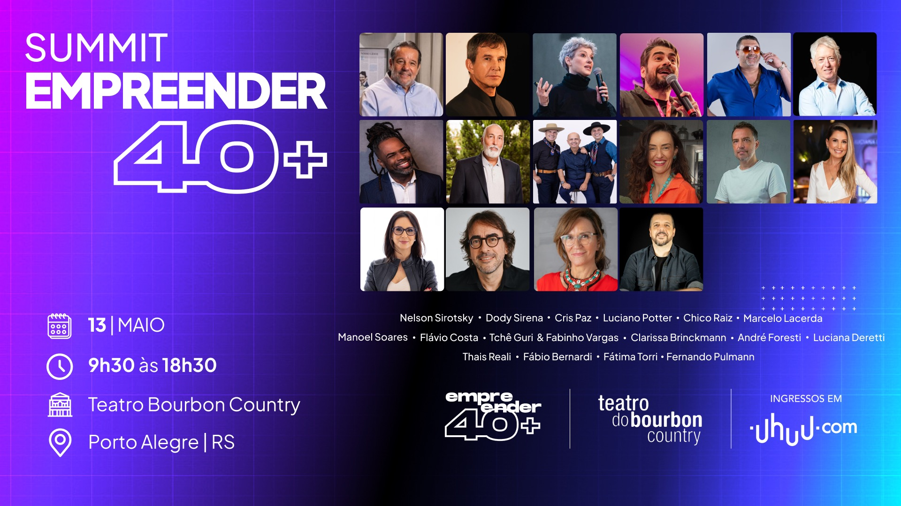
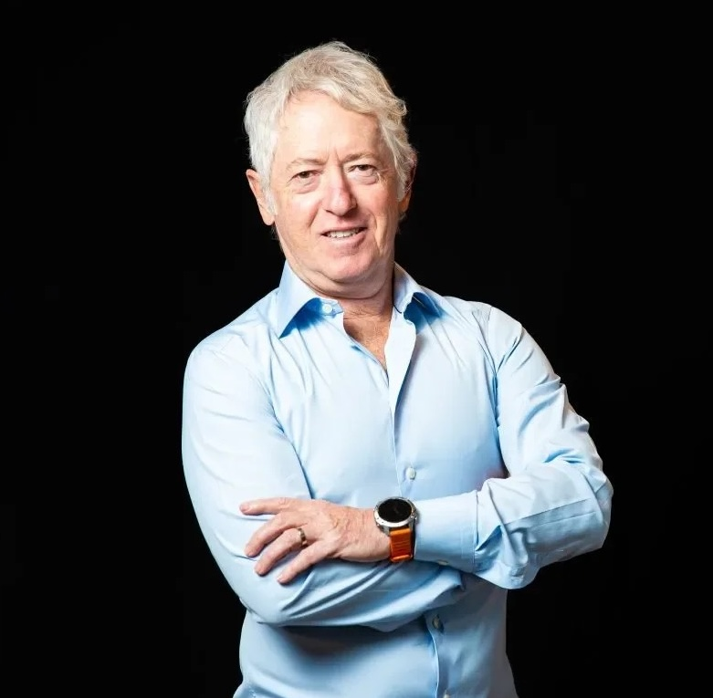

credenciamentoChegue cedo. A primeira conexão começa antes do palco.
Movimento Empreender 40+
O mundo mudou.
O empreendedor também.
Experiência acumulada não é ponto final. É a base para criar, liderar e transformar os próximos capítulos — ao lado de quem também está em movimento.
próxima edição13 MAI 2026Teatro Bourbon Country · Porto Alegre/RSver programação ↗
presença que inspira+ de 1.800participantes em duas edições
Um movimento vivodurante todo o ano
CONEXÃO✦PROTAGONISMO✦EXPERIÊNCIA✦TRANSFORMAÇÃO✦CONEXÃO✦PROTAGONISMO✦EXPERIÊNCIA✦TRANSFORMAÇÃO
01 / uma nova fase
Não somos um evento.
Somos um movimento.
Milhões de brasileiros vivem uma nova fase profissional depois dos 40 anos: empreendedores, executivos, profissionais liberais e pessoas que decidiram colocar a experiência para trabalhar a seu favor.
O Empreender 40+ nasceu para conectar, inspirar e desenvolver essa geração. Uma marca, uma comunidade, diversos pontos de contato durante todo o ano.
∞
Conteúdo relevante para quem já viveu muito,
mas ainda tem muito para construir.
02 / o ecossistema
Uma comunidade em
movimento constante.
Cada iniciativa fortalece as demais, criando um ecossistema permanente de relacionamento, conteúdo e experiências.
um movimento
nacional
Summitideias, negóciosnacional
e futuros Caravanaconexões por todo
o Rio Grande do Sul Confrariasrelacionamento
qualificado Conteúdoconhecimento
que continua
uma marca+uma comunidade+muitos pontos de contato
03 / experiência presencial
Summit
Empreender 40+
O Summit que transforma trajetórias.
Um dia inteiro de imersão com palestras inspiradoras, painéis estratégicos e networking qualificado — para quem já tem bagagem e quer ir ainda mais longe.
Garantir meu ingresso ↗SUMMIT40+ideias, negócios e futuros
25palestrantes
10h+de imersão
2ªedição
EXPERIÊNCIAS QUE CONECTAM E INSPIRAM
palestrasnetworkingnegóciosprotagonismo
04 / um dia para sair do lugar
Uma agenda
cheia de faísca.
Da abertura ao encerramento, uma sequência de conversas, painéis e histórias para transformar experiência em próximo passo.
13 de maio de 2026Quarta-feira · 08h às 19hTeatro Bourbon Country · Porto Alegre/RS
Ver detalhes no site oficial ↗aberturaAbertura oficial do evento
painelJornal do Comércio: Cassius Othoran & Cristiana EscobarMediação: Isadora Jacoby
palestraLuciana Deretti: Invencível
painelDody Sirena & Nelson SirotskyMediação: Fábio Bernardi
palestraJorge Audy: experiência que impacta o presente e constrói o futuro
intervaloAlmoço e troca de ideias
palestraManoel Soares: a base é o novo topo
painelClarissa Brinckmann & Thais RealiMediação: Fátima Torri
palestraAndré Foresti: menos prompt, mais thinking
palestraCris Paz: vista cansada ou foco no que importa?
palestra-showTchê Guri
palestraLuciano Potter: porque ouvir histórias vai mudar sua vida
encerramentoO último insight do dia é só o começo da conversa.
04 / em números
40+
é só o começo.
Uma plataforma que cresce com as pessoas e cria impacto dentro e fora do palco.
de conteúdo
ao vivo
pessoas
circulando
pessoas
impactadas
veículos de
comunicação
RIO GRANDE
DO SULPorto AlegrePelotasSanta MariaBento GonçalvesPasso FundoImbé
DO SULPorto AlegrePelotasSanta MariaBento GonçalvesPasso FundoImbé
CARAVANAEmpreender 40+conectando empreendedores por todo o estado
05 / conexão regional
Caravana
Empreender 40+
Levar o movimento até onde estão os empreendedores.
Depois de consolidar o movimento em Porto Alegre, a Caravana conecta empreendedores de todas as regiões do Estado.
AlegretePelotasBento GonçalvesSanta MariaPasso FundoImbé
Leve o movimento para sua cidade ↗06 / encontros exclusivos
Confrarias
Empreender 40+
O movimento também acontece todos os meses. Perto, profundo e feito para gerar novas oportunidades.


01encontros mensaisO movimento segue ativo todos os meses.
02cerca de 40 convidadosEmpresários, empreendedores e lideranças por edição.
03relacionamento permanenteVínculo contínuo com a comunidade Empreender 40+.
07 / presença digital
O movimento
continua vivo.
Conhecimento, inspiração e conexão durante todo o ano.
Conteúdo original com entrevistas, histórias inspiradoras, especialistas, empreendedores, tendências e temas relevantes para quem empreende depois dos 40 anos.
98 vídeos publicados12k inscritos no canal

Muito além das postagens.
Empreendedorismo, liderança e reinvenção.
08 / plataforma própria
Um site para
quem ainda tem muito
para construir.
Um espaço permanente de informação, conhecimento e discussão para a geração 40+.
Conheça a plataforma ↗conteúdo · conexão · conhecimentoempreender40mais.com
09 / um ano inteiro
Uma iniciativa
fortalece a outra.
Summit, Caravana, Confrarias, Redes Sociais, YouTube e Site. Diferentes formatos, o mesmo propósito: criar um ecossistema vivo para a geração 40+.
relacionamento→conteúdo→experiências→comunidade
10 / faça parte
O próximo capítulo
começa com uma conexão.
Quer levar o Empreender 40+ para sua cidade, sua empresa ou sua comunidade? Vamos conversar.
conectar · inspirar · desenvolver